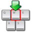
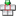

La saisie automatique
|
 |
La saisie automatiqueFonction puissante qui envoie des pressions de touches simulées aux autres applications. |
- Informations de base sur la saisie automatique
- Exigences et limitations
- Appel de la saisie automatique
- Depuis le menu contextuel : commande 'Accomplir la saisie automatique'
- Raccourci clavier global de la saisie automatique
- Spécification des séquences de touches pressées et des fenêtres cibles
- Les séquences de touches pressées de saisie automatique
- Les filtres de fenêtre cible
- Modifier la séquence de saisie automatique par défaut
- Exemple d'utilisation
 Informations de base sur la saisie automatique
Informations de base sur la saisie automatique
KeePass dispose d'une fonctionnalité de "saisie automatique". Cette fonctionnalité permet de définir une séquence de touches pressées, que KeePass peut automatiquement accomplir pour vous. Les touches pressées simulées peuvent être envoyées à n'importe quelle autre fenêtre actuellement ouverte de votre choix (navigateur, boîtes de dialogue de login, etc.).
Par défaut, la séquence de touches pressées envoyée est {USERNAME}{TAB}{PASSWORD}{ENTER}, c'est-à-dire qu'elle tape d'abord le nom d'utilisateur de l'entrée sélectionnée, puis appuie sur la touche Tabulation, saisit le mot de passe de l'entrée et appuie finalement sur la touche Entrée.
Pour les entrées de NAT (TAN), la séquence par défaut est {PASSWORD}, c'est-à-dire qu'elle saisit juste le NAT dans la fenêtre cible, sans appuyer sur Entrée.
La saisie automatique peut être configurée individuellement pour chaque entrée en utilisant l'onglet de saisie automatique sur la boîte de dialogue de l'entrée (sélectionner une entrée → Modifier l'entrée...). Sur cette page vous pouvez spécifier une séquence par défaut et personnaliser des associations fenêtre/séquence spécifiques.
Deux canaux d'obfuscation de saisie automatique sont pris en charge (ce qui rend la saisie automatique résistante aux enregistreurs de frappe).
De plus, vous pouvez créer des associations fenêtre/séquence personnalisées, qui remplacent la séquence par défaut. Vous pouvez spécifier différentes séquences de touches pressées pour différentes fenêtres pour chaque entrée. Par exemple : imaginez une page HTML, sur laquelle vous souhaitez vous connecter, qui a plusieurs pages dont une permet la connexion. Ces pages pourraient toutes sembler un peu différente (sur une vous pourriez de plus avoir besoin de vérifier des cases à cocher – comme on en voit souvent sur les forums). Ici la création d'associations fenêtre/séquence personnalisées résout les problèmes : il vous suffit de spécifier simplement différentes séquences de saisie automatique pour chaque fenêtre (identifiée par leur titre).
Appel de la saisie automatique :
Il y a trois méthodes différentes pour appeler la saisie automatique :
- Appel de la saisie automatique pour une entrée en utilisant la commande du menu contextuel Accomplir la saisie automatique tout en ayant au préalable sélectionnée l'entrée.
- Sélectionnez l'entrée et appuyez sur Ctrl+V (c'est le raccourci de la commande du menu contextuel ci-dessus).
- En utilisant les raccourcis clavier globaux de saisie automatique. KeePass recherchera dans toutes les entrées de la base de données actuellement ouverte des séquences de correspondance.
Toutes les méthodes sont expliquées en détail ci-dessous.
Focus d'entrée :
Remarquez que la saisie automatique démarre en tapant dans le contrôle de la fenêtre cible qui a le focus d'entrée. Donc, par exemple pour la séquence par défaut vous devez vous assurer que le focus d'entrée est positionné sur le contrôle d'utilisateur de la fenêtre cible avant l'appel de la saisie automatique en utilisant les méthodes ci-dessus.
 Exigences et limitations
Exigences et limitations
Les droits :
Pour que la saisie automatique fonctionne, KeePass doit s'exécuter avec les mêmes droits ou droits plus élevés que l'application cible. Notamment, si l'application cible s'exécute avec les droits d'administration, KeePass doit également s'exécuter avec les droits d'administration. Pour les détails, cf. conception du mécanisme d'intégrité de Windows. Un exemple : certaines instances de VMware Workstation s'exécutent sur un niveau d'intégrité supérieur.
Les bureaux à distance et les machines virtuelles :
KeePass ne connait pas la disposition du clavier qui a été sélectionné sur un bureau distant ou une fenêtre de machine virtuelle. Si vous souhaitez saisir automatiquement dans une telle fenêtre, alors vous devez vous assurer que le système local et le système distant/virtuel utilise la même disposition de clavier.
Au moment d'accomplir la saisie automatique à l'intérieur d'un bureau distant ou une fenêtre de machine virtuelle, les caractères suivants peuvent être problématiques (selon les circonstances exactes) et doivent donc être évités, si possible : " (U+0022), ' (U+0027), ^ (U+005E), ` (U+0060), ~ (U+007E), ¨ (U+00A8), ¯ (U+00AF), ° (U+00B0), ´ (U+00B4), ¸ (U+00B8), les lettres qui modifient l'espacement (U+02B0 to U+02FF), et les caractères qui ne peuvent pas être réalisés en une combinaison de touches directe.
Wayland :
Sur des système Unix-like avec un compositeur Wayland, il peut y avoir d'autres limitations ; cf. la page Auto-Type on Wayland.
 Depuis le menu contextuel : la commande 'Accomplir la saisie automatique'
Depuis le menu contextuel : la commande 'Accomplir la saisie automatique'
Cette méthode est celle qui nécessite le moindre effort et est la plus simple, mais elle a l'inconvénient que vous devez sélectionner dans KeePass l'entrée dont vous souhaitez la saisie automatique.
La méthode est simple : clic droit sur l'entrée de votre base données actuellement ouverte et cliquez 'Accomplir la saisie automatique' (ou appuyez alternativement le raccourci Ctrl+V pour cette commande). La fenêtre qui précédemment avait le focus (c'est-à-dire celle dans laquelle vous travailliez avant de permuter vers KeePass) sera appelée au premier plan et KeePass saisit automatiquement vers cette fenêtre.
La séquence qui est saisie automatiquement dépend du titre de la fenêtre. Si vous ne spécifiez aucune association fenêtre/séquence personnalisée la séquence par défaut est envoyée. Si vous avez créé des associations, KeePass utilise la séquence de la première association qui correspond. Si aucune des associations ne correspond, alors la séquence par défaut est utilisée.
 Raccourci clavier global de la saisie automatique
Raccourci clavier global de la saisie automatique
C'est la méthode la plus puissante, mais elle nécessite également un peu plus de travail/connaissance, avant de pouvoir être utilisée.
Exemple d'une simple saisie automatique globale :
- Créer dans KeePass une entrée qui s'intitule Notepad avec les valeurs pour le nom d'utilisateur et le mot de passe.
- Démarrer Notepad (depuis 'Programmes' → 'Accessoires').
- Appuyer sur Ctrl+Alt+A depuis Notepad. Le nom d'utilisateur et le mot de passe seront saisis dans Notepad.
Le titre Notepad de l'entrée de KeePass correspond avec le titre de la fenêtre de Notepad et la séquence par défaut de saisie automatique est tapée.
Comment ça marche ? - Détails :
KeePass enregistre un raccourci clavier global pour la saisie automatique. L'avantage de ce raccourci clavier est que vous n'avez pas à permuter vers la fenêtre KeePass et sélectionner l'entrée. Vous appuyez simplement sur le raccourci tout en ayant la fenêtre cible ouverte (c'est-à-dire la fenêtre qui recevra la pression des touches simulées).
Par défaut, le raccourci clavier global est Ctrl+Alt+A (c'est-à-dire maintenez les touches Ctrl et Alt, appuyez sur A et relâchez toutes les touches). Vous pouvez modifier ce raccourci clavier dans la boîte de dialogue des options (menu principal → 'Outils' → 'Options...', onglet 'Intégration') : ici, cliquez dans la fenênetre de saisie de texte du raccourci de saisie automatique global et saisissez le raccourci que vous souhaitez utiliser. Si le raccourci clavier est utilisable, il apparaîtra dans la zone de texte.
Quand vous appuyez le raccourci clavier, KeePass examine le titre de la fenêtre actuellement ouverte et recherche les entrées utilisables dans la base de données actuellement ouverte. Si KeePass trouve plusieurs entrées qui peuvent être utilisées, alors il affiche une boîte de dialogue de sélection. Une entrée est considérée comme utilisable pour le titre de la fenêtre courante quand au moins une des conditions suivantes est remplie :
- Le titre de l'entrée est une sous-chaîne du titre de la fenêtre actuellement active.
- L'entrée a une association fenêtre/séquence, dont le spécifiant de fenêtre correspond au titre de la fenêtre actuellement active.
La seconde condition a déjà été mentionnée, mais la première est nouvelle. En utilisant les titres d'entrée comme filtres pour les titres des fenêtres, le coût de la configuration pour la saisie automatique est presque nul : vous n'avez besoin que de vous assurer que le titre de l'entrée est contenu dans le titre de la fenêtre dans laquelle vous souhaitez que l'entrée soit saisie automatiquement. Bien sûr, ceci n'est pas toujours possible (par exemple : si une page HTML a un titre très générique comme "Bienvenue"), alors ici vous devez utiliser des associations fenêtre/séquence personnalisées.
Des associations fenêtre/séquence personnalisées peuvent être spécifiées sur l'onglet 'Saisie automatique' de chaque entrée.
Les associations complètent le titre de l'entrée de KeePass.
Toute association spécifiée sera utilisée en plus au titre de l'entrée de KeePass pour déterminer une correspondance.
Les définitions de fenêtre de saisie automatique, des titres d'entrée et adresses (URLs) sont compilées par Spr, c'est-à-dire que des paramètres substituables (placeholders), variables d'environment, références de champ, etc. peuvent être utilisés.
 Les séquences de touches pressées de la saisie automatique
Une séquence de touches pressées de saisie automatique est une chaîne d'une ligne qui peut contenir des paramètre substituables et des codes de touche spéciale.
Une liste complète de tous les paramètres substituables pris en charge peut être trouvée sur la page paramètres substituables. Les codes de touche spéciale peuvent être trouvés ci-dessous.
Au-dessus vous avez déjà vu que la saisie automatique par défaut est {USERNAME}{TAB}{PASSWORD}{ENTER}. Ici, {USERNAME} et {PASSWORD} sont des paramètres substituables : lorsque la saisie automatique est accomplie, ceux-ci sont remplacés par les valeurs de champ appropriées de l'entrée. {TAB} et {ENTER} sont des codes de touche spéciale : ils sont remplacés par les touches appropriées. Les codes de touche spéciale sont la seule façon de spécifier des touches spéciales comme Flèche vers le bas, Maj, Échap, etc.
Bien sûr, les séquences de touches peuvent également contenir des caractères simples à envoyer. Par exemple : la chaîne suivante est parfaitement valide en tant que chaîne de séquence de touches :
{USERNAME}{TAB}Du texte pour envoi ! {ENTER}.
Les codes de touche spéciale sont sensibles à la casse.
Les touches spéciales :
Les codes suivants pour les touches spéciales sont pris en charge :
|
Touche spéciale |
Code |
|
Tabulation |
{TAB} |
|
Entrée |
{ENTER} ou ~ |
|
Flèche vers le haut |
{UP} |
|
Flèche vers le bas |
{DOWN} |
|
Flèche gauche |
{LEFT} |
|
Flèche droite |
{RIGHT} |
|
Insertion |
{INSERT} ou {INS} |
|
Supprimer |
{DELETE} ou {DEL} |
|
Début |
{HOME} |
|
Fin |
{END} |
|
Page précédente |
{PGUP} |
|
Page suivante |
{PGDN} |
|
Espace |
{SPACE} |
|
Retour arrière |
{BACKSPACE}, {BS} ou {BKSP} |
|
Pause |
{BREAK} |
|
Verrouillage des majuscules |
{CAPSLOCK} |
|
Échap |
{ESC} |
|
Touche Windows |
{WIN} (équ. à {LWIN}) |
|
Touche Windows : gauche, droite |
{LWIN}, {RWIN} |
|
Applications/Menu |
{APPS} |
|
À l'aide |
{HELP} |
|
Pavé numérique verrouillé |
{NUMLOCK} |
|
Imprime écran |
{PRTSC} |
|
Arrêt défilement |
{SCROLLLOCK} |
|
F1 - F16 |
{F1} - {F16} |
|
Pavé numérique + |
{ADD} |
|
Pavé numérique - |
{SUBTRACT} |
|
Pavé numérique * |
{MULTIPLY} |
|
Pavé numérique / |
{DIVIDE} |
|
Pavé numérique 0 à 9 |
{NUMPAD0} à {NUMPAD9} |
|
Maj |
+ |
|
Ctrl |
^ |
|
Alt |
% |
|
Touche spéciale |
Code |
|
+ |
{+} |
|
% |
{%} |
|
^ |
{^} |
|
~ |
{~} |
|
(, ) |
{(}, {)} |
|
[, ] |
{[}, {]} |
|
{, } |
{{}, {}} |
De plus, certaines commandes spéciales sont prises en charge :
|
Syntaxe de commande |
Action |
|
{DELAY X} |
Retarde X millisecondes. |
|
{DELAY=X} |
Définit le retard par défaut à X millisecondes pour toutes les pressions de touches suivantes. |
|
{CLEARFIELD} |
Efface le contenu du contrôle d'édition qui a actuellement le focus (seulement les contrôles d'édition sur une seule ligne). |
|
{VKEY X} |
Envoi la touche virtuelle de valeur X. |
|
{APPACTIVATE TitreFenêtre} |
Active la fenêtre "TitreFenêtre". |
|
{BEEP X Y} |
Émet un son avec une fréquence de X Hertz et une durée de Y millisecondes. |
|
Syntaxe de commande |
Action |
|
{VKEY X F} |
Envoie la touche virtuelle de valeur X ; cf. ci-dessous. |
{VKEY X F}:
cette commande encoie la touche virtuelle de valeur X. Le paramètre F est optionnel et pourrait être une combinaison des valeurs suivantes :
- E: Envoie une touche étendue ; cf. ci-dessous.
- N: Envoie une touche non-étendue ; cf. ci-dessous.
- D : Appuyer et tenir enfoncée la touche (sans la relâcher).
- U: Relâcher la touche (sans la presser).
Les valeurs E et N sont exclusives mutuellement. Il est recommandé de spécifier ni E ni N, si possible ; KeePass determine alors automatiquement si la touche virtuelle est typiquement réalisée en utilisant une touche étendue.
The values D and U are mutually exclusive. If neither D nor U is specified, KeePass sends a keypress (i.e. down and up).
Sur les systèmes Linux, KeePass convertit automatiquement la plupart des codes de touche virutelle Widnows vers des codes de touche Linux (c'est-à-dire : la commande {VKEY ...} fontionne sur les deux système à la fois).
Exemples :
- {VKEY 13}
Appuie et relâche la touche Entrée primaire. Ceci est équivalent à {ENTER}. - {VKEY 13 E}
Appuie et relâche la touche Entrée du pavé numérique. - {VKEY 91 D}e{VKEY 91 U}
Envoie Win+E (c'est-à-dire qu'il presse et maintient appuyer la touche Win de gauche, appuie et relâche la touche E, et relâche la touche Win), qui exécute l'explorateur Windows (sur Windows). Ceci n'est pas équivalent à {LWIN}e (qui d'abord appuie et relâche la touche Win de gauche puis alors appuie et relâche la touche E).
Remarquer que l'explorateur Windows peut également être démaré en utilisant {CMD:/Explorer.exe/W=0/} (le paramètre substituable {CMD:/.../} peut arbitrairement exécuter des lignes de commande).
N'utilisez pas la commande {VKEY ...} pour changer l'état des modificateurs Maj, Ctrl et Alt. Pour ceci, utilisez +, ^ et % à la place (voir ci-dessus).
Les touches et les touches spéciales (pas les paramètres substituables ni les commandes) peuvent être répétées en ajoutant un nombre dans le code. Par exemple, {TAB 5} appuie la touche Tabulation 5 fois.
Exemples :
{TITLE}{TAB}{USERNAME}{TAB}{PASSWORD}{ENTER}
Saisit le titre de l'entrée, une Tabulation, le nom d'utilisateur, une Tabulation, le mot de passe de l'entrée actuellement sélectionnée, et appuie sur Entrée.
{TAB}{PASSWORD}{ENTER}
Appuie sur la touche Tabulation, saisit le mot de passe de l'entrée et appuie sur Entrée.
{USERNAME}{TAB}^v{ENTER}
Saisit le nom d'utilisateur, appuie sur Tabulation, appuie sur Ctrl+V (qui copie les données depuis le presse-papiers de Windows dans la plupart des applications), et appuie sur Entrée.
Basculer les cases à cocher :
Une case à cocher (par exemple : "Rester connecté sur cet ordinateur") peut habituellement être basculé en envoyant un caractère espace (' '). Exemple :
{USERNAME}{TAB}{PASSWORD}{TAB} {TAB}{ENTER}
S'il y a un formulaire avec un champ de nom d'utilisateur, un champ de mot de passe et une case à cocher, cette séquence entrera le nom d'utilisateur, le mot de passe et activera la case à cocher qui suit le contrôle du mot de passe.
Appuyer sur les boutons autres que ceux par défaut :
En appuyant sur les boutons autres que ceux par défaut, cela revient à basculer les cases à cocher : envoie un espace (' '). Remarquez que cela doit être utilisé que pour les boutons autres que ceux par défaut ; pour les boutons par défaut, {ENTER} doit être envoyé à la place.
Les plus hauts caractères ANSI :
La fonction de saisie automatique prend en charge l'envoi des plus hauts caractères ANSI dans l'intervalle 126-255. Ce qui signifie que vous pouvez envoyer un caractère spécial comme ©, @, etc. sans aucun problème ; vous pouvez les écrire directement dans la définition de la séquence de touches pressées.
 Les filtres de la fenêtre cible
Les filtres de la fenêtre cible
Quand on crée une association fenêtre/séquence personnalisée, vous devez indiquer à KeePass à quoi ressemblent les titres de fenêtre correspondants. Ici, KeePass prend en charge les caractères génériques simples :
|
Chaîne avec des caractères génériques |
Signification |
|
STRING |
Correspond à tous les titres de fenêtre nommés exactement "STRING". |
|
STRING* |
Correspond à tous les titres de fenêtre commençant par "STRING". |
|
*STRING |
Correspond à tous les titres de fenêtre se terminant par "STRING". |
|
*STRING* |
Correspond à tous les titres de fenêtre contenant "STRING" quelque part dans le titre de la fenêtre. Cela inclut la chaîne se trouvant directement au début ou à la fin du titre de la fenêtre. |
Les caractères génériques peuvent également apparaître au milieu des motifs. Par exemple : *Windows*Explorer* correspondrait à Windows Internet Explorer.
De plus, la correspondance utilise la prise en charge d'expressions régulières. Afin d'indiquer à KeePass que le motif est une expression régulière, on l'entoure entre //. Par exemple : //B.?g Window// correspondrait à Big Window, Bug Window et Bg Window.
En utilisant des caractères génériques, vous pouvez faire des associations de saisie automatique indépendamment du navigateur. cf. les exemples d'utilisation pour plus d'informations.
 Modifier la séquence de saisie automatique par défaut
Modifier la séquence de saisie automatique par défaut
La séquence de saisie automatique par défaut (c'est-à-dire celle qui est utilisée quand vous n'en spécifiez pas une personnalisée) est {USERNAME}{TAB}{PASSWORD}{ENTER}. KeePass vous permet de modifier cette séquence par défaut. Normalement vous n'avez pas besoin de la modifier (utiliser plutôt les définitions de fenêtre/séquence personnalisées à la place !), mais c'est quand même utile quand d'autres applications interfèrent avec KeePass (par exemple un logiciel de sécurité qui vous demande toujours la permission avant d'autoriser KeePass à effectuer une saisie automatique).
Par défaut, les entrées héritent de la séquence de saisie automatique du groupe auquel elles appartiennent. Les groupes héritent également de la séquence de saisie automatique de leurs groupes parents. Il n'y a qu'un seul groupe au top (le premier groupe contient tous les autres groupes). Par conséquent, si vous modifiez la séquence de saisie automatique de ce tout premier groupe, alors tous les autres groupes et leurs entrées utiliseront cette séquence. En pratique, il s'agit d'une dérogation globale. Pour le changer, faites un clic droit sur le premier groupe, choisissez 'Modifier un groupe...' et passer à l'onglet 'Saisie automatique'.
Exemple d'utilisation
Maintenant jetons un œil sur un exemple concret : la connexion à un site. Dans cet exemple, nous utiliserons le raccourci clavier de saisie automatique globale pour remplir la page de connexion. Tout d'abord ouvrez la page de test, et créez ensuite une nouvelle entrée dans KeePass avec le titre Test Form et un nom d'utilisateur et mot de passe de votre choix.
Supposons que le raccourci clavier de saisie automatique globale soit défini sur Ctrl+Alt+A (valeur par défaut). KeePass s'exécute en arrière-plan, vous avez ouvert votre base de données et l'espace de travail est déverrouillé.
Lorsque vous naviguez maintenant sur la page de test et que vous êtes invités à saisir votre nom d'utilisateur et mot de passe, cliquez alors simplement dans le champ du nom d'utilisateur et appuyer sur Ctrl+Alt+A. KeePass entre le nom d'utilisateur et le mot de passe pour vous !
Pourquoi cela a-t-il fonctionné ? Le titre de la fenêtre de votre navigateur était "Test Form - KeePass - Internet Explorer" ou "Test Form - KeePass - Mozilla Firefox", selon le navigateur que vous utilisez. Parce que nous avons donné à l'entrée dans KeePass le titre Test Form, le titre de l'entrée est contenu dans le titre de la fenêtre, donc KeePass utilise cette entrée.
Ici vous voyez les énormes avantages de la saisie automatique : non seulement elle ne nécessite pas d'un logiciel de navigation supplémentaire (le navigateur ne sait rien de KeePass – il n'y a pas besoin de greffons d'aide de navigateur), mais elle est également indépendante du navigateur : la seule entrée que vous avez créée dans KeePass fonctionne pour Internet Explorer et Mozilla Firefox (et autres navigateurs) sans nécessiter une modification ou définition.
Lorsque vous utiliserez des associations fenêtre/séquence (au lieu de la correspondance du titre de l'entrée), vous pourrez obtenir le même résultat indépendamment du navigateur en utilisant des caractères génériques : vous auriez pu par exemple utiliser Test Form - KeePass - * comme filtre de fenêtre. Ce filtre correspond à la fois à la fenêtre Internet Explorer et à la fenêtre Firefox.